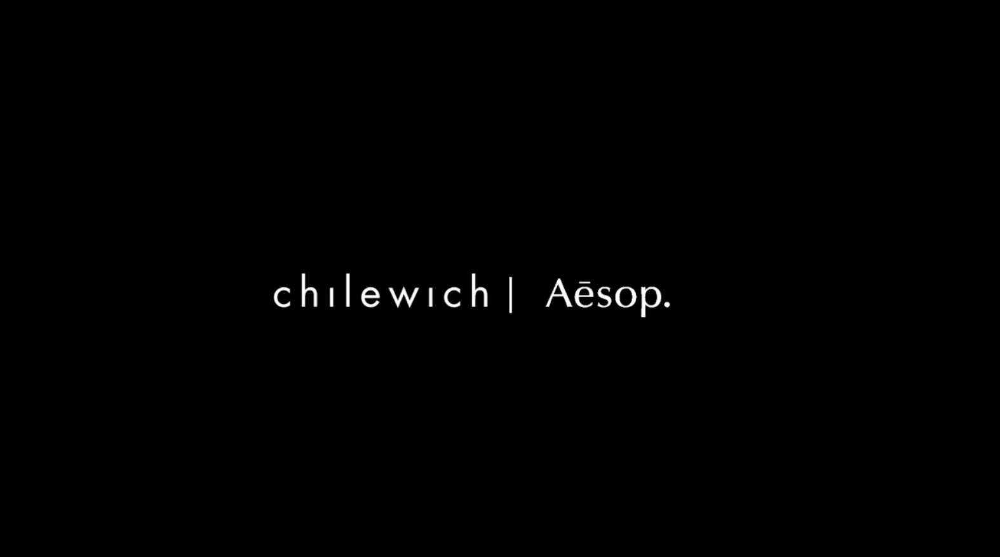
My team developed The Interlude Collection as a strategic partnership between Chilewich and Aesop to transform functional daily routines into emotional rituals. Chilewich initially came to us with a challenge: they wanted to connect with a younger demographic while still staying true to their design ethos and not alienating their current customers. Our starting point was a familiar moment—being on the go, surrounded by cluttered or inadequate surfaces, and feeling our well intentioned rituals fall apart. We realized that the market doesn’t need more wellness products; it needs better spaces to feel well, anywhere. Chilewich already has the form—durable, design-driven, and admired—but it hasn’t yet become part of people’s personal, tactile rituals. We saw an opportunity to move it from background object to personal companion, from dining tables to everyday use. Our target audience—women aged 25–35, high-functioning, emotionally literate, and often traveling—crave portable, sensory products that help them pause and reset.
Our solution is The Interlude Mat: a foldable, rollable surface made from Chilewich’s TerraStrand® textile. It organizes skincare and grooming tools, is water-resistant and travel-friendly, and can adapt to multiple uses—from beauty routines to carrying picnic utensils or art supplies. In partnership with Aesop, the mat would be introduced through immersive retail experiences, leveraging Aesop’s strength in turning physical spaces into storytelling moments. We validated the concept through store visits, conversations with Aesop staff, and user testing, which revealed excitement over the product’s multi-functionality. By integrating Aesop’s sensory-driven brand language with Chilewich’s material expertise, we designed not just a mat, but a textured, minimalist object with memory—a “pause you can carry.”
The collaboration is low-risk and high-value: it enhances Chilewich’s emotional storytelling, aligns with Aesop’s ethos, and opens doors for pop-ups, co-branded experiences, and future product variations in new markets. Our vision extends beyond this launch—expanding into new colors, sizes, and uses to deepen both brands’ connection with design-conscious, ritual-seeking consumers. Our project was ultimately chosen as a finalist and presented at a Chilewich event, where it received strong interest for its potential to expand the brand’s reach and redefine its role in consumers’ daily lives.
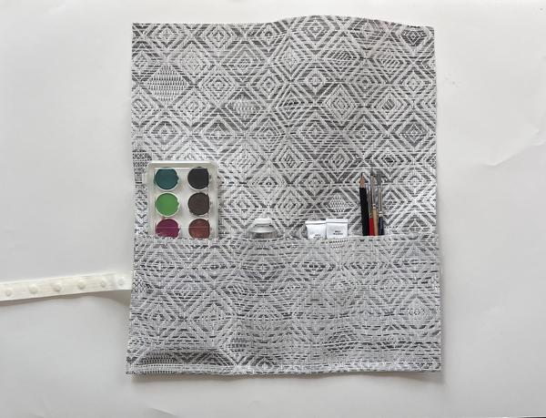
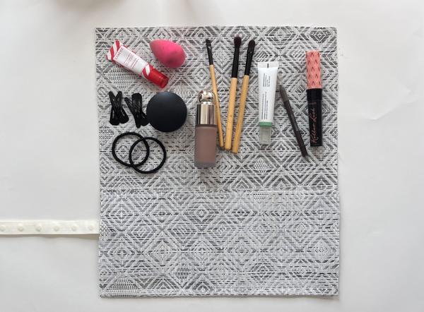
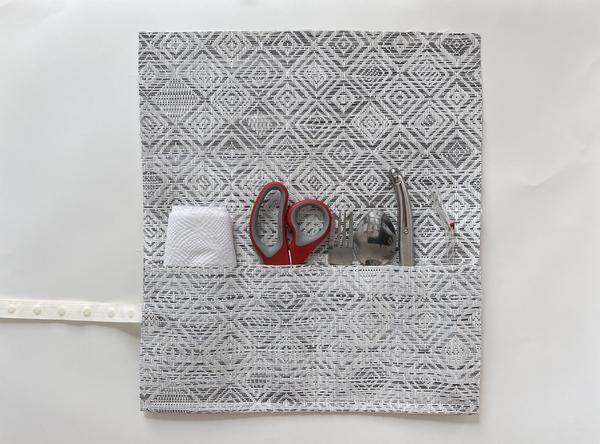
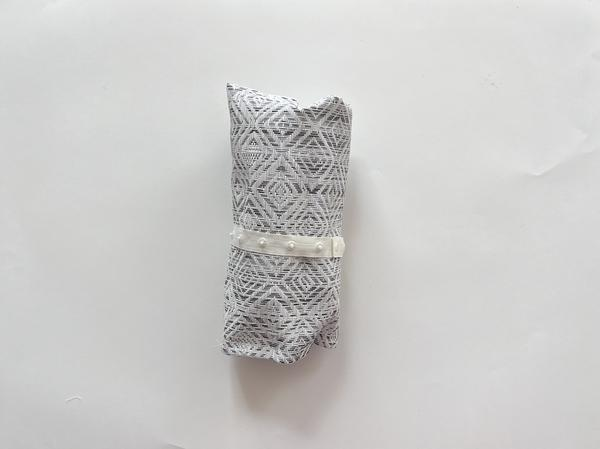
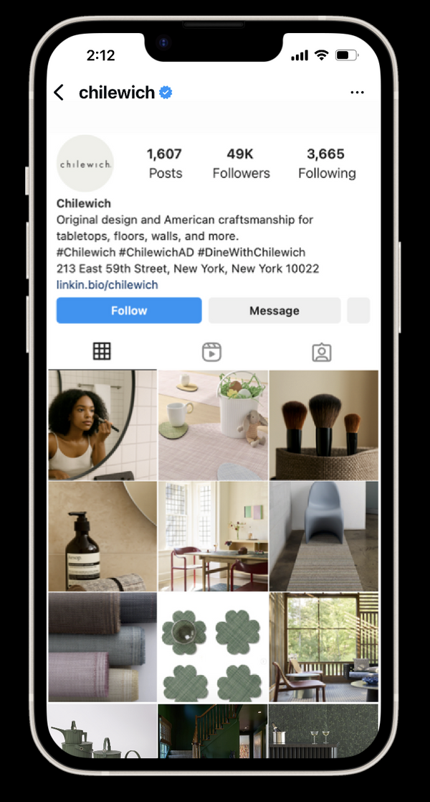
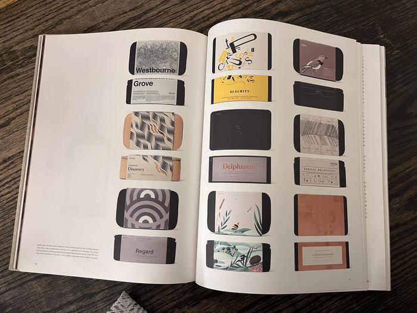
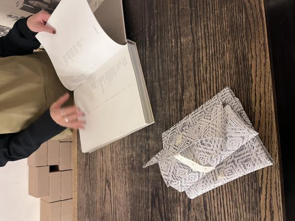
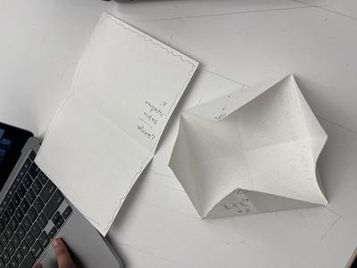
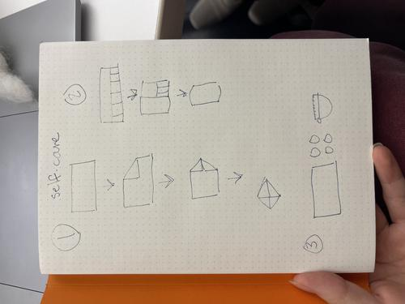
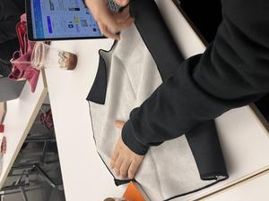